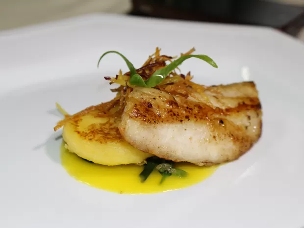

Sabores Típicos de Porto Velho
A culinária de Porto Velho é marcada pela influência indígena,
nortista e nordestina, misturando ingredientes regionais, sabores
intensos e tradições culturais que atravessam gerações. Pratos
preparados com peixe, mandioca, frutas amazônicas e especiarias fazem
parte do cotidiano e representam a essência gastronômica da cidade.

Os ingredientes amazônicos desempenham papel essencial na gastronomia
local. Entre eles destacam-se:
- Jambu
- Tucupi
- Açaí tradicional (não adoçado)
- Castanha-do-pará
- Peixes de água doce como tambaqui, pirarucu e surubim

A doçaria da região traz sabores únicos produzidos com frutas nativas,
como cupuaçu, bacaba, graviola e taperebá. Sucos, sorvetes e cremes
dessas frutas são presença garantida nos mercados e restaurantes da
cidade.